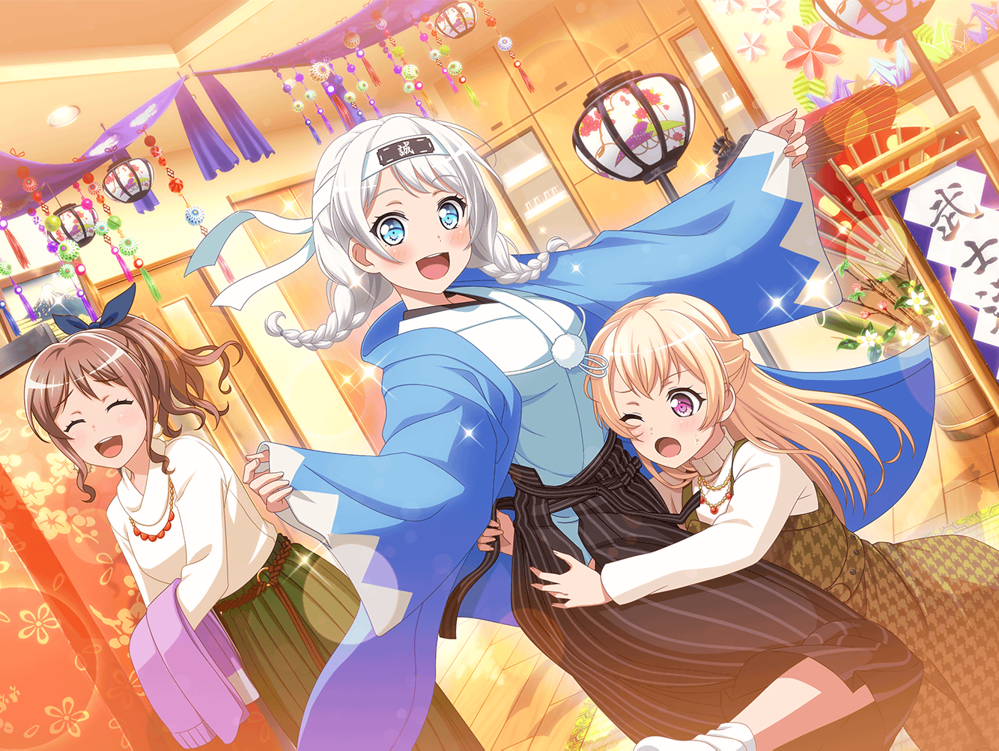

イヴの家
イヴ
ご指導よろしくお願いします、リサさん！
リサ
ご指導って……あはは、そんなにかしこまらなくっていいって
リサ
でも、料理を教えて欲しいって電話が来た時は驚いたよー
イヴ
料理のことは料理の上手な人に頼むのが一番だと思ったんです
リサ
あはは、そんなに上手でもないって〜。
でも、そんなふうに言ってもらえるのはすっごく嬉しいな！
リサ
……で、これからその友達が来て、パーティなんだよね？
リサ
どんな料理作るの？ 材料はもうあるんだよね？
あんまり手の込んだ料理だと、けっこう厳しいかもだけど……
イヴ
手巻き寿司とお味噌汁を作ろうと思うんです
リサ
へぇ、手巻き寿司か。うん、いいじゃん！
リサ
それなら具材を切るぐらいだし、時間はかからないかなー
イヴ
本当ですか！
……あ、リサさん、それは私ひとりでもできるでしょうか？
リサ
ひとりで？ 大丈夫だと思うけど……なんで？
イヴ
自分の手で作った料理でおもてなししたいんです。
そのほうが歓迎の気持ちが伝わる気がしますから
リサ
……そっか。
オッケー、じゃあアタシは傍でアドバイスするね
イヴ
はい、よろしくお願いします！
リサ
じゃ、まずは具材を切るところからだね〜
イヴ
野菜はきゅうりと長ねぎ、大葉を用意しました
イヴ
では、精神を集中して……若宮イヴ、参ります！
リサ
……って、ちょっとちょっと！
なんで両手で包丁持ってんの？
イヴ
一太刀できゅうりをリョーダンしようと
構えているところですけど……？
リサ
両断しないの。ほら、包丁の持ち方はこう。
そっちの手は猫の手にして野菜を押さえて
イヴ
は、はい。猫の手……こ、こうですか？
リサ
うん、きゅうりはヘタを除いてから半分に切って。
それから縦に切っていくよ。あんまり薄くならないようにね
イヴ
わ、わかりました！ がんばります！
イヴ
……ふう。リサさん、準備終わりましたっ！
リサ
うんうん、具材は全部オッケー。
ごはんも……うん、硬さもいい感じ。海苔も準備よしだね。
お疲れ様、手巻き寿司のほうは準備完璧だよ
イヴ
はい！ 無事に完了してよかったです！
イヴ
次はお味噌汁ですね。具は豆腐とわかめと油揚げを用意しました
リサ
こっちもそんなに難しくないよ。具を準備して、煮るだけだし
リサ
じゃあ、さっきの感じで具を切ってこっか
イヴ
はい！
イヴ
……よし。あとはお湯が沸いたらお味噌を入れるだけですね
リサ
うん、ここまできたらもう心配ないかな
イヴ
ここまでこれたのもリサさんのアドバイスのおかげです！
イヴ
リサさんは本当に料理が上手なんですね。
お料理は誰に教えてもらったんですか？
リサ
アタシはお母さんに教えてもらったんだ
リサ
こう見えて意外と煮物とか好きなんだよねー、アタシ。
それで、自分でも作れるようになりたくて教えてもらったんだ
イヴ
いえ、意外だなんて思いません！ 好きな物は人それぞれです！
日本食が好きなのは、日本人として誇るべきことですよ！
リサ
あはは、ありがと。イヴは素直でいい子だね
リサ
というかさ、イヴは料理とか教わってなかったの？
イヴ
簡単なものは教えてもらったのですが……
フィンランドを代表する料理は少ししか教えてもらっていません
イヴ
今度帰ったら、おばあちゃんにもっと教えてもらおうと思います！
リサ
じゃあ、それを作れるようになったら、
アタシも食べさせてもらっちゃおうかな〜♪
イヴ
はい、ぜひ！
作れるようになったら、
日本のお友達にも食べてもらいたいです！
イヴ
……あ、お湯が沸いたみたいです、リサさん
イヴ
これにお味噌を溶き入れるんですよね？
えーと、こういう感じでしょうか？？
リサ
そうそう、そんな感じで入れたらできあがり！
じゃ、味見してみよっか！
イヴ
そうですね。では、いただきます……！
イヴ
……………………
イヴ
さすがリサさん直伝のお味噌汁ですね……
ほっとする優しい味です……
イヴ
はっ！ もしかして、これがオフクロの味ですか！？
リサ
えっ？ ちょっと、アタシまだお母さんじゃないから〜！
イヴ
そうでした！ リサさんはとても料理が上手なので、つい！
リサ
ま、いいけど。ちゃんと美味しくできてよかったね☆
イヴ
はい！ 本当にありがとうございます！
料理の準備はリサさんのおかげでばっちりです！
リサ
どーいたしまして。パーティ、上手くいくといいね